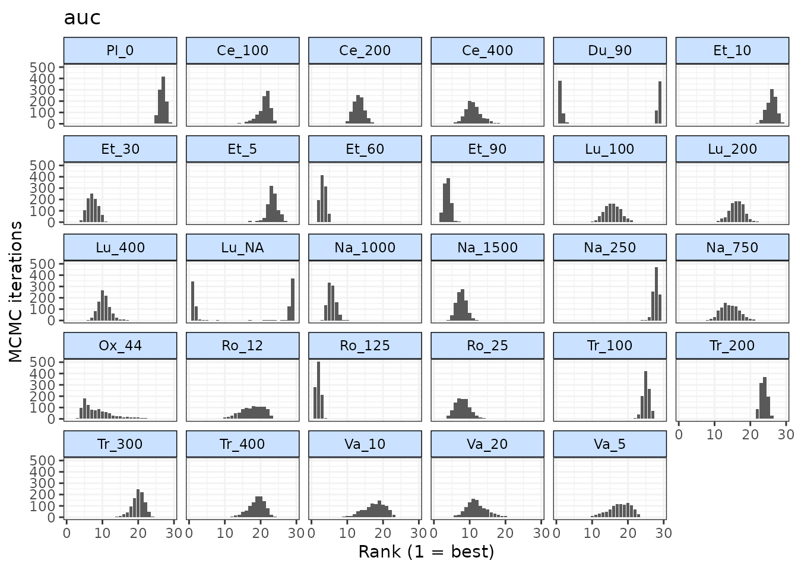
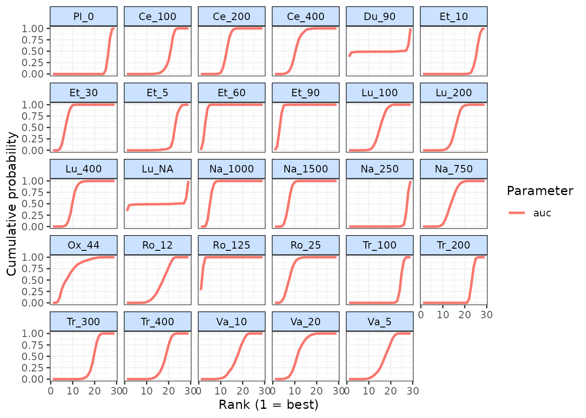

Outputs: Relative effects, forest plots and rankings
Hugo Pedder
2025-01-21
outputs-4.RmdEstimating relatived effects between treatments at a specified time-point
Although mb.run() estimates the effects for different
treatments on different time-course parameters, these are not
necessarily easy to draw conclusions from, particularly for time-course
functions with less easily interpretable parameters.
get.relative() allows users to calculate mean differences
(or log-Ratio of Means if mb.run(link="log")) between
treatments at a specified time-point even if a subset, or even none of
the treatments have been investigated at that time-point in included
RCTs.
These results will then be reported on the scale on which the data
were modeled (i.e. depending on the link function specified in
mb.run()), rather than that of the specific time-course
parameters. Within the matrices of results, mean differences/relative
effects are shown as the row-defined treatment versus the column-defined
treatment.
# Run a quadratic time-course MBNMA using the alogliptin dataset
network.alog <- mb.network(alog_pcfb)
#> Reference treatment is `placebo`
#> Studies reporting change from baseline automatically identified from the data
mbnma <- mb.run(network.alog,
fun=tpoly(degree=2,
pool.1="rel", method.1="random",
pool.2="rel", method.2="common"
)
)
#> module glm loaded
#> Compiling model graph
#> Resolving undeclared variables
#> Allocating nodes
#> Graph information:
#> Observed stochastic nodes: 233
#> Unobserved stochastic nodes: 71
#> Total graph size: 4375
#>
#> Initializing model
# Calculate relative effects between 3 treatments
allres <- get.relative(mbnma, time=20,
treats = c("alog_100", "alog_50", "placebo"))
print(allres)
#> ========================================
#> Treatment comparisons at time = 20
#> ========================================
#>
#> alog_100 0.89 (0.62, 1.2) 0.87 (-0.49, 2.3)
#> -0.89 (-1.2, -0.62) alog_50 -0.023 (-1.4, 1.4)
#> -0.87 (-2.3, 0.49) 0.023 (-1.4, 1.4) placeboget.relative() can also be used to perform a 2-stage
MBNMA that allows synthesis of results from two different MBNMA models
via a single common comparator. In an MBNMA model, all treatments must
share the same time-course function. However, a 2-stage approach can
enable fitting of different time-course functions to different sets
(“subnetworks”) of treatments. For example, some treatments may have
rich time-course information, allowing for a more complex time-course
function to be used, whereas others may be sparse, requiring a simpler
time-course function.
Relative comparisons between treatments in the two datasets at specific follow-up times can then be estimated from MBNMA predicted effects versus a common comparator using the Bucher method and assuming consistency.
![2-stage MBNMA: For clarity, 95%CrIs are not shown in the plots or tables but these are calculated and computed in `get.relative()`. Thick connecting lines in network plots indicate comparisons with rich time-course data that can be modelled with a more complex function (e.g. B-spline), thin connecting lines in network plots indicate comparisons with sparse time-course data that can only be modelled with a less complex function (e.g. BEST-ITP). Comparisons between treatments in different subnetworks that are not the network reference must be excluded (red dashed line in network plot).](2stageMBNMA.png)
2-stage MBNMA: For clarity, 95%CrIs are not shown in the plots or tables
but these are calculated and computed in get.relative().
Thick connecting lines in network plots indicate comparisons with rich
time-course data that can be modelled with a more complex function
(e.g. B-spline), thin connecting lines in network plots indicate
comparisons with sparse time-course data that can only be modelled with
a less complex function (e.g. BEST-ITP). Comparisons between treatments
in different subnetworks that are not the network reference must be
excluded (red dashed line in network plot).
- Step 1: The network at a chosen network reference treatment (A) into subnetworks with rich and sparse time-course data.
- Step 2: Separate time-course MBNMAs are fitted to each subnetwork using a different time-course function, and relative effects versus the network reference treatment are predicted over time.
- Step 3: Bucher method is used to calculate predicted relative
effects between all treatments at specific time-points of interest
(e.g. ,
and
).
This can be done with
get.relative()using the output from both MBNMA models inmbnmaandmbnma.addarguments. For more details and an example see the function help file (?get.relative).
Deviance plots
To assess how well a model fits the data, it can be useful to look at
a plot of the contributions of each data point to the total deviance or
residual deviance. This can be done using devplot(). As
individual deviance contributions are not automatically monitored in the
model, this might require the model to be run for additional
iterations.
Results can be plotted either as a scatter plot
(plot.type="scatter") or a series of boxplots
(plot.type="box").
# Using the osteoarthritis dataset
network.pain <- mb.network(osteopain, reference = "Pl_0")
# Run a first-order fractional polynomial time-course MBNMA
mbnma <- mb.run(network.pain,
fun=tfpoly(degree=1,
pool.1="rel", method.1="random",
method.power1=0.5))
# Plot a box-plot of deviance contributions (the default)
devplot(mbnma, n.iter=1000)#> Studies reporting change from baseline automatically identified from the data
#> `dev` not monitored in mbnma$parameters.to.save.
#> additional iterations will be run in order to obtain results for `dev`From these plots we can see that whilst the model fit is typically better at later time points, it fits very poorly at earlier time points.
A function that appropriately captures the time-course shape should show a reasonably flat shape of deviance contributions (i.e. contributions should be similar across all time points).
If saved to an object, the output of devplot() contains
the results for individual deviance contributions, and this can be used
to identify any extreme outliers.
Fitted values
Another approach for assessing model fit can be to plot the fitted
values, using fitplot(). As with devplot(),
this may require running additional model iterations to monitor
theta.
# Plot fitted and observed values with treatment labels
fitplot(mbnma, n.iter=1000)Fitted values are plotted as connecting lines and observed values in the original dataset are plotted as points. These plots can be used to identify if the model fits the data well for different treatments and at different parts of the time-course.
Forest plots
Forest plots can be easily generated from MBNMA models using the
plot() method on an "mbnma" object. By default
this will plot a separate panel for each time-course parameter in the
model. Forest plots can only be generated for parameters which vary by
treatment/class.
rank(): Ranking
Rankings can be calculated for different time-course parameters from
MBNMA models by using rank() on an "mbnma"
object. Any parameter monitored in an MBNMA model that varies by
treatment/class can be ranked by passing its name to the
params argument. lower_better indicates
whether negative scores should be ranked as “better” (TRUE)
or “worse” (FALSE)
In addition, it is possible to rank the Area Under the Curve (AUC)
for a particular treatment by specifying param="auc" (this
is the default). This will calculate the area under the predicted
response over time, and will therefore be a function of all the
time-course parameters in the model simultaneously. However, it will be
dependent on the range of times chosen to integrate over
(int.range), and a different choice of time-frame may lead
to different treatment rankings. "auc" can also not
currently be calculated from MBNMA models with more complex time-course
functions (piecewise, fractional polynomials), nor with MBNMA models
that use class effects.
# Using the osteoarthritis dataset
network.pain <- mb.network(osteopain, reference = "Pl_0")
#> Studies reporting change from baseline automatically identified from the data
# Run a piecewise linear time-course MBNMA with a knot at 1 week
mbnma <- mb.run(network.pain,
fun=tspline(type="ls", knots = 1,
pool.1 = "rel", method.1="common",
pool.2 = "rel", method.2="common"))
# Rank results based on AUC (calculated 0-10 weeks), more negative slopes considered to be "better"
ranks <- rank(mbnma, param=c("auc"),
int.range=c(0,10), lower_better = TRUE, n.iter=1000)
print(ranks)
#>
#> ========================================
#> Treatment rankings
#> ========================================
#>
#> auc ranking
#>
#> |Treatment | Mean| Median| 2.5%| 97.5%|
#> |:---------|-----:|------:|----:|-----:|
#> |Pl_0 | 26.76| 27.0| 25| 28.00|
#> |Ce_100 | 20.97| 21.0| 16| 24.00|
#> |Ce_200 | 13.20| 13.0| 10| 16.00|
#> |Ce_400 | 11.05| 11.0| 7| 16.00|
#> |Du_90 | 15.22| 24.5| 1| 29.00|
#> |Et_10 | 25.89| 26.0| 23| 28.00|
#> |Et_30 | 7.26| 7.0| 5| 10.00|
#> |Et_5 | 23.31| 23.0| 19| 26.00|
#> |Et_60 | 3.28| 3.0| 2| 5.00|
#> |Et_90 | 3.69| 4.0| 2| 5.00|
#> |Lu_100 | 15.68| 16.0| 11| 20.00|
#> |Lu_200 | 16.22| 16.0| 12| 20.00|
#> |Lu_400 | 10.45| 10.0| 7| 14.00|
#> |Lu_NA | 15.25| 23.0| 1| 29.00|
#> |Na_1000 | 5.67| 6.0| 4| 8.00|
#> |Na_1500 | 7.67| 8.0| 5| 10.00|
#> |Na_250 | 27.88| 28.0| 26| 29.00|
#> |Na_750 | 14.31| 14.0| 10| 19.00|
#> |Ox_44 | 8.70| 8.0| 4| 20.00|
#> |Ro_12 | 17.64| 18.0| 11| 23.00|
#> |Ro_125 | 1.95| 2.0| 1| 3.00|
#> |Ro_25 | 7.99| 8.0| 4| 12.02|
#> |Tr_100 | 25.11| 25.0| 23| 27.00|
#> |Tr_200 | 23.77| 24.0| 22| 26.00|
#> |Tr_300 | 19.96| 20.0| 16| 23.00|
#> |Tr_400 | 18.86| 19.0| 14| 23.00|
#> |Va_10 | 17.62| 18.0| 11| 22.00|
#> |Va_20 | 11.96| 12.0| 7| 18.00|
#> |Va_5 | 17.70| 18.0| 11| 23.00|The output is an object of class("mb.rank"), containing
a list for the ranked parameter which consists of a summary table of
rankings and raw information on treatment ranking and probabilities. The
summary median ranks with 95% credible intervals can be simply displayed
using print().
Histograms for ranking results can also be plotted using the
plot() method, which takes the raw MCMC ranking results
given in rank.matrix and plots the number of MCMC
iterations the parameter value for each treatment was ranked a
particular position.
# Ranking histograms for AUC
plot(ranks)
Cumulative rankograms indicating the probability of each treatment
being ranked 1st, 2nd, etc. for each ranked parameter can also be
plotted using cumrank(). These can be used to easily
compare how different treatments rank for each ranked parameter
simultaneously. By default, the Surface Under the Cumulative Ranking
curve (SUCRA) are also returned for each treatment and ranked parameter
(Salanti, Ades, and Ioannidis 2011).
# Cumulative ranking for all ranked parameters
cumrank(ranks)
#> # A tibble: 29 × 3
#> treatment parameter sucra
#> <fct> <chr> <dbl>
#> 1 Pl_0 auc 0.0945
#> 2 Ce_100 auc 0.294
#> 3 Ce_200 auc 0.562
#> 4 Ce_400 auc 0.636
#> 5 Du_90 auc 0.486
#> 6 Et_10 auc 0.125
#> 7 Et_30 auc 0.767
#> 8 Et_5 auc 0.213
#> 9 Et_60 auc 0.904
#> 10 Et_90 auc 0.890
#> # ℹ 19 more rows